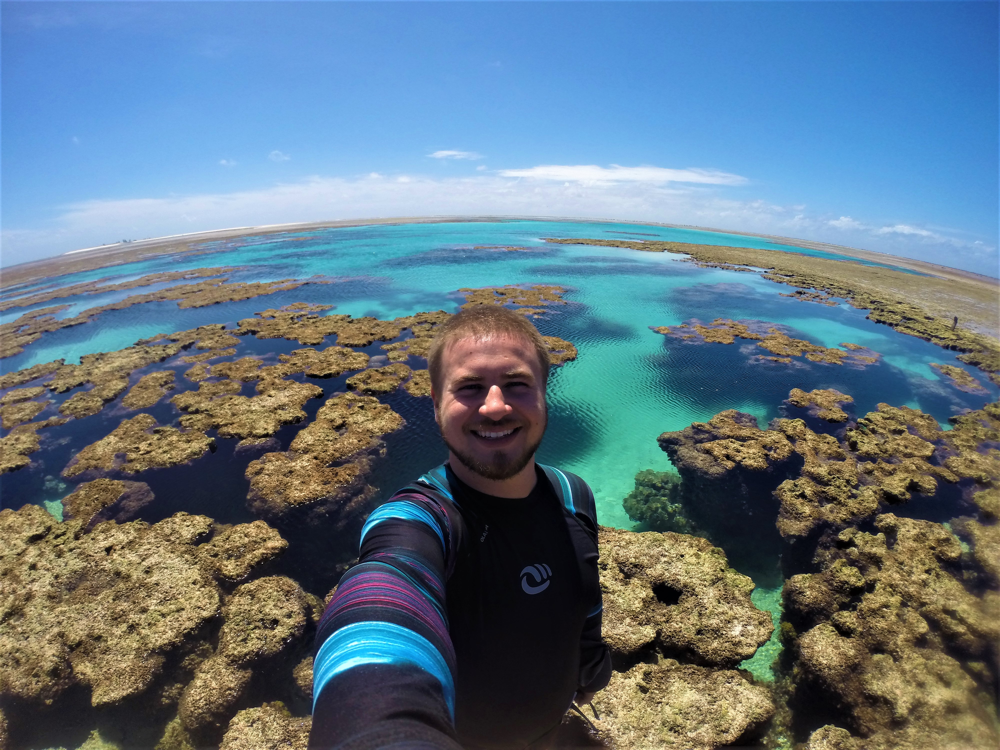

Da oceanografia para o mundo da tecnologia
Nasci e fui criado em Curitiba até meus 17 anos, quando me mudei para Florianópolis para estudar Oceanografia. Ao longo da minha graduação, mestrado e doutorado em Ecologia, desenvolvi experiências em atividades de campo, mergulhando em lugares únicos do Brasil (como o Atol das Rocas, na foto abaixo) e me especializando na criação e manutenção de base de dados, conhecimento estatístico e análise de dados na linguagem R. Agora, estou mergulhando fundo para a transição de carreira para a área de tecnologia, com foco em me tornar um desenvolvedor full-stack. Acompanhe abaixo mais sobre minha nova vida, como parte de um projeto do programa Floripa Mais Tec - FuturoDEV.

Minhas metas
Focando em me transformar em um desenvolvedor full-stack, iniciei minha trajetória na programação em janeiro de 2023 pelo "básico": HTML, CSS e JavaScript. Com o passar do tempo, fui me especializando cada vez mais em JavaScript, focando no front-end, até começar a estudar NodeJS, finalmente mergulhando no back-end. Além disso, explorei um pouco o React, para entender como frameworks e bibliotecas funcionam. Por fim, por conta do meu doutorado, também sigo com meus estudos na linguagem R e análise de dados. Espero que com o Floripa Mais Tec eu possa sedimentar ainda mais meu conhecimento e, quem sabe, encontrar minha primeira oportunidade profissional na área.